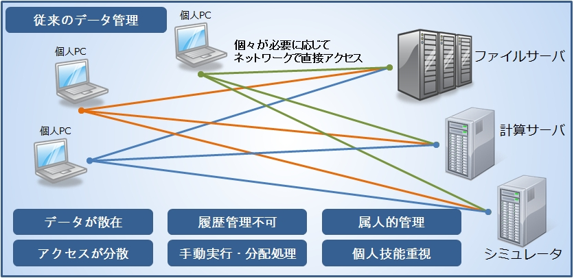
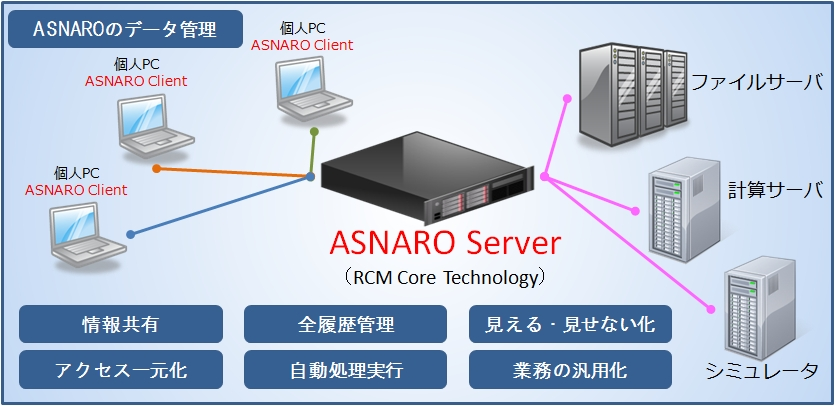

エンジニアリングデータ管理システム 『 ASNARO 』
開発現場における課題点
解析・実験など研究開発を取り巻く状況
- ハードやソフトの高性能化により、モデルデータや格子データ、解析データ、実験データ、可視化データ、レポートなどのデータ量の大幅な増加、質の向上
- 解析や検出の精度が向上とともに、生成されるデータやファイルが増大
- 最適化追求などによる、解析・設計ケースが増大
- ソフトウェア運用/適用範囲の拡大
- 知見を持った技能者の海外流出や退職などで後継者不足によるノウハウ継承が困難
データ管理の状況
- データがどこにあるのか分からない
- データ生成における前後関係や関連性が分からない・分かりにくい
- どのファイルが最新なのか、フィックスされたものなのかが不明
- 正体不明のファイルが多数あり、必要なファイルが埋もれている
- 個人管理に任されており、人それぞれ管理手法が違う
『 ASNARO 』仕組み
開発現場における課題を大きく分けると以下のように分類できます。
- 高まるデータ管理の重要性への対応
- データ検索・整理に要する非生産的なコストの削減
- 高度なセキュリティ体制と情報の共有化への両立
- 高度化・専門化する業務に対する知識・ノウハウの継承
これらの課題を、現在お手持ちのアプリケーション環境やハードウェア環境はそのままで、以下のような仕組みで解決することができます。


『 ASNARO 』による課題解決
◆非定型・非定常になりがちな解析・実験・分析業務
多くのデータを算出する解析や実験のデータベース化は強く要望されてきました。しかしながら、データベース化がうまくいかなかったり、陳腐化してしまうということで、『実現しない』『失敗した』とよく耳にします。理由は明確で、解析や実験などは、型にはまった数値データや結果を得るということがなく、非定型・非定常なデータとして扱われるためです。『ASNARO』はRCM System Softwareをコア技術としており、非定型・非定常なデータを扱うことを得意とした独自開発のXMLデータベースシステムで稼働します。 さらには、XMLデータベースということも意識させない、GUIからの操作のみでデータベース構築ができます。データベースの知識がない方でも簡単に非定型・非定常なデータ管理が可能です。
◆専任者だけが分かる仕組みを自動化・標準化
解析や実験は専任者だけが分かる世界です。反対にいえば専任者以外誰もわからないということが、当たり前になっています。『ASNARO』の利用によりノウハウの詰まった専任者の業務を自動化・標準化することにより、専任者以外でも業務を代行することが可能となり、組織内で専任者のノウハウの共有が実現できます。
◆削除された過去データを容易に再現
解析や実験データは「巨大」（容量・計算時間など）になりがちです。すぐにハードディスクの空き容量が少なくなり、ブルーレイ・DVD等のメディアへのバックアップやハードディスクの増設をご経験されている方も多いでしょう。インプットデータやスクリプトファイルのみ保管し、巨大なRAWデータの保管はされていないという方も多くおられます。ところがいざ過去のデータが必要となった時には、これらのファイルのみからの再現計算を行っても完全再現できないことがあります。『ASNARO』では、インプットファイルなどの解析や可視化で必要となるファイルが、算出手順などのデータの関連性から使用されたパラメータとともに、全てデータベース化されます。ワークフローの実行ボタン一つで、過去にさかのぼって再現計算をすることが簡単にできます。